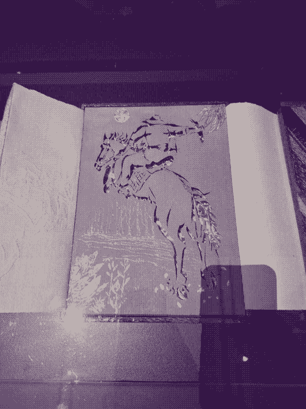

I was tired by the time we arrived at Paper Universe so I admittedly didn't soak it in completely. The works were nice, and I felt like they inspired a will to make things, that they don't need to be perfect or functional. Maybe it was partly the setting, or the display, but I struggled to engage with most of the works. I remember the man from snowy river, and the large form bush fire book in the corner and I thought they were amazing pieces.

The Man From Snowy River by AB Paterson, Dave Wood. 816x612. 4 colour PNG-8. 37KB.